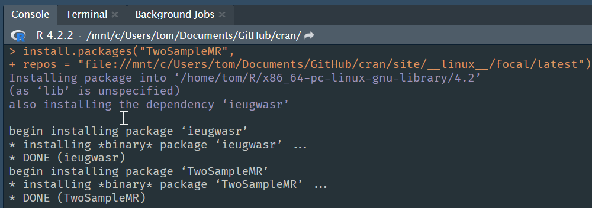

CRAN is a fantastic resource, in particular because it provides binary packages for Windows and macOS (for both Intel and Apple Silicon Macs). Because there are so many Linux distributions it does not provide binary packages for Linux and so installing R packages on Linux can be slow as the bundled source packages need to be built on the user’s machine.
Of course there are quite a few resources providing binary R packages for specific Linux distributions (including Michael Rutter’s PPA for Ubuntu, and binary packages for Debian, and the R2U system which can use the BSPM.)
I will focus on the publicly available Posit (formerly RStudio) Package Manager which is a fantastic resource for two reasons, it provides
The aim of this is post is to show how the magic of distributing Linux binry packages is achieved.
In two excellent blog posts Marks Sellors describes how to make a CRAN-like repository.1 And there is an excellent package, miniCRAN to help do this, but I don’t need to use this for the following explanation.
To host bundled source packages, i.e., package sources which have been run through R CMD build to make a package_version.tar.gz file for each package, we require the following directory structure (noting that the latest directory is optional, but allows you to add snapshot directories at a later date).
/mycran
└── latest
└── src
└── contrib
└── 4.3.0
└── RecommendedAssuming that you have some bundled source package package_version.tar.gz files, from say CRAN or built from your own package sources, we place those into the .../src/contrib directory. In that directory we then run
tools::write_PACKAGES()which generates 3 additional files (PACKAGES, PACKAGES.gz, and PACKAGES.rds) which R will use to query what packages are available in our repository when its served on the web.
To build binary R packages the bundled source version of the package, the package_version.tar.gz file needs to be run through R CMD install --build. On Windows this will generate a package_version.zip file, and a package_version.tgz file on macOS. Once we have generated some binary packages we need to know where to put them.
Since CRAN distributes binary packages for Windows and macOS we follow their directory structure, which is as follows.
/mycran
└── latest
├── bin
│ ├── macosx
│ │ ├── big-sur-arm64
│ │ │ └── contrib
│ │ │ └── 4.2
│ │ └── contrib
│ │ └── 4.2
│ └── windows
│ └── contrib
│ └── 4.2
└── src
└── contrib
└── 4.3.0
└── RecommendedNoting that the current version of R is 4.2.2 (the relevant directory name with the minor version changes when R’s minor version number changes), we place
.../bin/windows/contrib/4.2/ directory..../bin/macosx/contrib/4.2/ directory..../bin/macosx/big-sur-arm64/contrib/4.2/ directory.We then run tools::write_PACKAGES() in each of these directories to generate the 3 PACKAGES files.
CRAN does not distribute Linux binary packages and so there is no folder structure to copy.
However there is from the RStudio/Posit Package Manager, which achieves this in a very clever way.
On Linux when we build binary packages with R CMD install --build . they are generated with file names such as pkgname_version_R_x86_64-pc-linux-gnu.tar.gz. Posit rename these files to simply pkgname_version.tar.gz, which we remember is the same naming format as for bundled source packages. This is no coincidence.
They then place them in a parallel directory structure, called ./__linux__/distro-name/latest/, with the same subdirectory structure as for CRAN’s bundled source packages. Hence, package_version.tar.gz files of binary packages for say Ubuntu Focal Fossa are placed into the .../__linux__/focal/latest/src/contrib/ directory and so the structure of our repository (well in fact our 2 parallel repositories) is now.
/mycran
├── __linux__
│ └── focal
│ └── latest
│ └── src
│ └── contrib
│ └── 4.3.0
│ └── Recommended
└── latest
├── bin
│ ├── macosx
│ │ ├── big-sur-arm64
│ │ │ └── contrib
│ │ │ └── 4.2
│ │ └── contrib
│ │ └── 4.2
│ └── windows
│ └── contrib
│ └── 4.2
└── src
└── contrib
└── 4.3.0
└── RecommendedAnd again we the run tools::write_PACKAGES() in the .../__linux__/distro-name/src/contrib directory for each Linux distribution that we make a parallel directory structure for.
Once this folder structure is being served we can set our repository in R to .../__linux__/focal/latest and R will find the package_version.tar.gz files in the ...__linux__/focal/src/contrib/ directory.
It is worth noting that the package_version.tar.gz files within __linux__/focal/latest/src/contrib do not all have to be of binary packages. They can be either bundled source or binary packages (indeed they could of course be all bundle source packages). This is helpful if you haven’t had time to build all your binary versions.
You can either run a local webserver or use the file://... URL notation as your repos global options setting (set with option(repos = c(CRAN = "...")) or as the repos argument to install.packages()). Here’s a screenshot of installing a binary package on Ubuntu Focal Fossa.

In summary, making a CRAN-like repository is a question of putting the right files in the right directory structure. Linux binary packages can be distributed by using the same naming convention as for bundled source packages, and placing them in the same directory as for bundled source packages. And you can make parallel directory structures to distribute Windows and macOS binary packages and source packages alongside Linux binary packages.